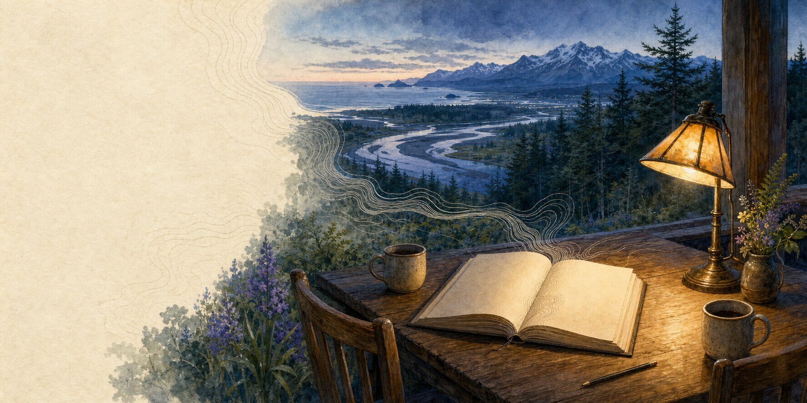

Original fiction
Field
Stories
Stories for the moments when a list is not enough.
Kits and checklists matter. Stories let us rehearse something facts alone cannot: what a decision feels like before certainty arrives, and how ordinary skills become care under pressure.
Every story here is fiction. The people, places, and events are invented or composed; factual sources appear after the final page.

The collection
Choose a story from the shelf.
Nine works of original fiction, each followed by factual source notes. Browse by landscape, then open whichever story draws you in.
-
01
Fire country · Fiction
Level Three
A horsewoman, her son, and her father meet an east wind with different plans.
7 chapters About 33 minutesRead the story → -
02
Rain shadow · Fiction
Overnight Lows
A water operator reads an island’s lake, its meters, and the people behind them.
6 chapters About 26 minutesRead the story → -
03
Earthquake country · Fiction
Inventory
An inventory specialist discovers what preparedness can—and cannot—hold.
7 chapters About 38 minutesRead the story → -
04
Earthquake country · Fiction
The List
A family’s unfinished refrigerator list becomes a map of the street around them.
7 chapters About 42 minutesRead the story → -
05
Ice country · Fiction
The Rounds
A home-health aide carries a county’s most important map in a spiral binder.
6 chapters About 27 minutesRead the story → -
06
River country · Fiction
Crest
A young family learns that the river’s history is a diary, not a promise.
7 chapters About 32 minutesRead the story → -
07
Storm coast · Fiction
Chafe Gear
A harbour manager follows a year’s quiet work toward the weather it was meant to meet.
4 chapters About 23 minutesRead the story → -
08
Outer coast · Fiction
Natural Warning
A coastal emergency coordinator inherits an old warning—and the responsibility to carry it forward.
6 chapters About 28 minutesRead the story → -
09
Volcano country · Fiction
Eruption
Three friends enter a watched landscape with maps, math, and one dangerous assumption.
6 chapters About 23 minutesRead the story →